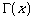

#include <math.h>
double lgamma(double x);
float lgammaf(float x);
long double lgammal(long double x);
[XSI] ![[Option Start]](../images/opt-start.gif) extern int signgam;
extern int signgam; ![[Option End]](../images/opt-end.gif)
lgamma, lgammaf, lgammal - log gamma function
#include <math.h>
double lgamma(double x);
float lgammaf(float x);
long double lgammal(long double x);
[XSI]
[CX]These functions shall compute

The argument x need not be a non-positive integer ( is defined over the reals, except the non-positive integers).[XSI]
[CX]
An application wishing to check for error situations should set errno to zero and call feclearexcept(FE_ALL_EXCEPT) before calling these functions. On return, if errno is non-zero or fetestexcept(FE_INVALID | FE_DIVBYZERO | FE_OVERFLOW | FE_UNDERFLOW) is non-zero, an error has occurred.
Upon successful completion, these functions shall return the logarithmic gamma of x.
If x is a non-positive integer, a pole error shall occur and lgamma(), lgammaf(), and lgammal() shall return +HUGE_VAL, +HUGE_VALF, and +HUGE_VALL, respectively.
If the correct value would cause overflow, a range error shall occur and lgamma(), lgammaf(), and lgammal() shall return ±HUGE_VAL, ±HUGE_VALF, and ±HUGE_VALL (having the same sign as the correct value), respectively.
[MX]
If x is 1 or 2, +0 shall be returned.
If x is ±Inf, +Inf shall be returned.
These functions shall fail if:
- Pole Error
- The x argument is a negative integer or zero.
If the integer expression (math_errhandling & MATH_ERRNO) is non-zero, then errno shall be set to [ERANGE]. If the integer expression (math_errhandling & MATH_ERREXCEPT) is non-zero, then the divide-by-zero floating-point exception shall be raised.
- Range Error
- The result overflows.
If the integer expression (math_errhandling & MATH_ERRNO) is non-zero, then errno shall be set to [ERANGE]. If the integer expression (math_errhandling & MATH_ERREXCEPT) is non-zero, then the overflow floating-point exception shall be raised.
None.
On error, the expressions (math_errhandling & MATH_ERRNO) and (math_errhandling & MATH_ERREXCEPT) are independent of each other, but at least one of them must be non-zero.
None.
None.
exp() , feclearexcept() , fetestexcept() , isnan() , the Base Definitions volume of IEEE Std 1003.1-2001, Section 4.18, Treatment of Error Conditions for Mathematical Functions, <math.h>
First released in Issue 3.
The DESCRIPTION is updated to indicate how an application should check for an error. This text was previously published in the APPLICATION USAGE section.
A note indicating that this function need not be reentrant is added to the DESCRIPTION.
The lgamma() function is no longer marked as an extension.
The lgammaf() and lgammal() functions are added for alignment with the ISO/IEC 9899:1999 standard.
The DESCRIPTION, RETURN VALUE, ERRORS, and APPLICATION USAGE sections are revised to align with the ISO/IEC 9899:1999 standard.
IEC 60559:1989 standard floating-point extensions over the ISO/IEC 9899:1999 standard are marked.
XSI extensions are marked.